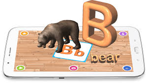

I am Shaima Al-Sheikh Ibrahim, 24 years old .I studied the science stream in high school with a grade of 96.6 .Then I completed my computer system engineering major at Palestine Technical University. I was employed as a research and teaching assistant at Palestine Technical University, Kadoorie, during the last year.
Programming languages and skills I learned during my studies: C,C++,JAVA,Data Structure ,Data Base , HTML,CSS,JS,PHP, MYSQL and AR technology.
My graduation project name was Playedu so Playedu a project that enables children of (KG1, KG2) to learn the English alphabet pronunciation, write, see and interact with three-dimensional (3D) object through cards using AR technology aims at teaching children is presented, due to Coronavirus disease and its effect in education , the majority of children waste a lot of time playing on smartphone. So playedu solve this problem. Also with Palestine’s circumstances and under the threat of Education being effected at anytime Playedu created to be a helpful idea for kids.
My graduation project was not in the field of the web, so I need to develop my skills through this course, and I hope that I will be able to design and develop websites and applications using web technologies.
About
Socialmedia